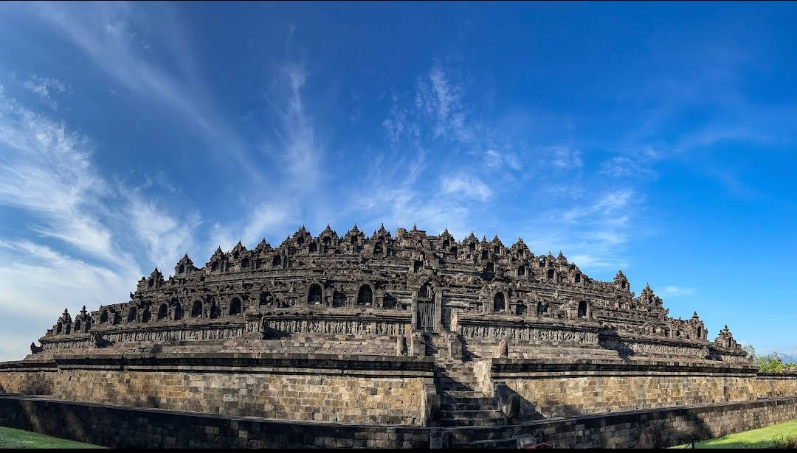
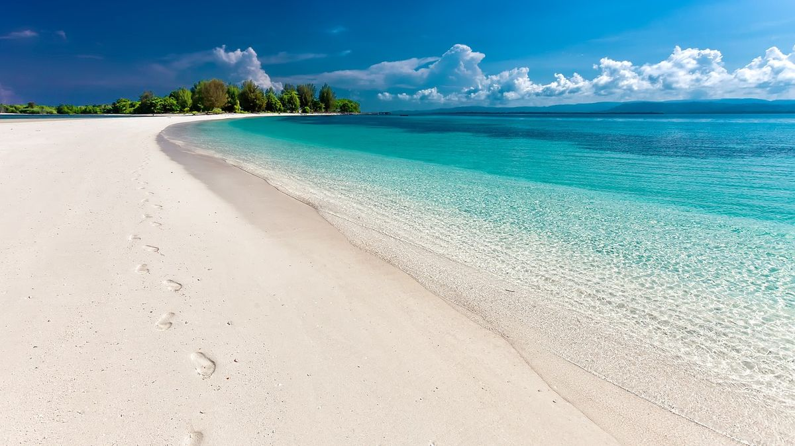
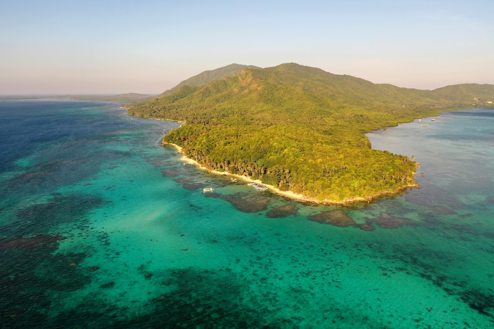
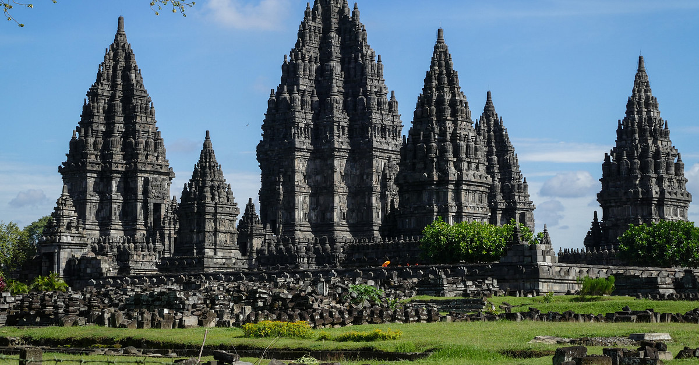

|
|
Beranda | Destinasi Wisata | Galeri | Event | Tentang Kami dan Kontak | |
|
Galeri Pesona Jawa Tengah Temukan keindahan alam dan budaya Jawa Tengah melalui koleksi foto-foto menakjubkan kami. Setiap gambar menceritakan kisah unik dari destinasi yang wajib dikunjungi. |
|
 Candi Borobudur Keajaiban arsitektur dan spiritual yang mendunia. |
 Pantai Menganti Keindahan pantai dengan pasir putih dan pemandangan matahari terbenam. |
 Karimunjawa Surga tropis dengan pulau-pulau eksotis dan terumbu karang yang menakjubkan. |
Jepara Kota ukir kayu dengan keindahan pantai dan budaya yang kaya. |
 Lawang Sewu Bangunan bersejarah dengan arsitektur yang menawan. |
 Grojogan sewu Air terjun yang indah di lereng Gunung Lawu, dikelilingi hutan pinus. |
 Semarang Kota dengan perpaduan budaya dan sejarah yang kaya. |
 Candi Prambanan Candi Hindu terbesar di Indonesia, terkenal dengan arsitektur yang megah. |
Magelang Kota yang dikelilingi pegunungan dan memiliki banyak tempat wisata alam. |
Keraton Surakarta Pusat kebudayaan Jawa yang kaya akan sejarah dan tradisi. |
 Pekalongan Kota batik yang terkenal dengan kerajinan tangan dan budaya lokal. |
 Kebun Teh Tambi Wonosobo Kebun teh yang indah dengan pemandangan pegunungan yang menakjubkan. |
Lokawisata Baturraden Banyumas Tempat wisata alam dengan pemandangan indah dan berbagai wahana menarik. |
Umbul Ponggok Klaten Kolam renang alami dengan keindahan bawah air yang menakjubkan. |
 Brown Canyon Semarang Keindahan alam yang menakjubkan dengan tebing-tebing curam dan pemandangan yang spektakuler. |
|
Telaga Warna Wonosobo Danau dengan air berwarna-warni yang indah, dikelilingi oleh pegunungan. |
Kawasan Dataran Tinggi Dieng Dataran tinggi dengan pesona alam, kawah, dan budaya unik yang memikat. |
 Purwokerto Kota sejuk di kaki Gunung Slamet, terkenal dengan wisata alam dan kuliner khasnya. |
Pagoda Avalokitesvara Semarang Pagoda megah dengan arsitektur yang indah, menjadi tempat ibadah dan wisata. |
 Air Terjun Batu Raden Air terjun yang indah di kawasan Baturraden, dikelilingi hutan pinus. |
 Pantai Karang Bolong Pantai dengan tebing berlubang unik dan suasana alami yang cocok untuk wisata alam dan foto-foto. |
 Pantai Karang Jahe Pantai tersembunyi dengan pasir putih dan ombak yang tenang, ideal untuk bersantai. |
 Candi Sari Candi Hindu yang terletak di dekat Candi Prambanan, terkenal dengan arsitektur yang indah. |
Temanggung Daerah pegunungan dengan kebun teh dan pemandangan alam yang menakjubkan. |
Bukit Sikunir Bukit terkenal untuk menyaksikan matahari terbit yang menakjubkan. |
 Candi Gedong Songo Kompleks candi Hindu di lereng Gunung Ungaran dengan panorama alam menawan. |
 Gunung Prau Gunung dengan pemandangan matahari terbit yang spektakuler dan padang bunga edelweiss. |
 Solo Safari Kebun binatang dengan berbagai satwa langka dan atraksi menarik. |
 The Funtastic Beach Safari Batang Pantai dengan berbagai wahana permainan air dan aktivitas seru. |
 Saloka Theme Park Taman bermain terbesar di Jawa Tengah dengan berbagai wahana menarik. |
|
© 2025 Pesona Jateng. All rights reserved. Dikelola oleh Tim Sigma Ikuti kami di Instagram |